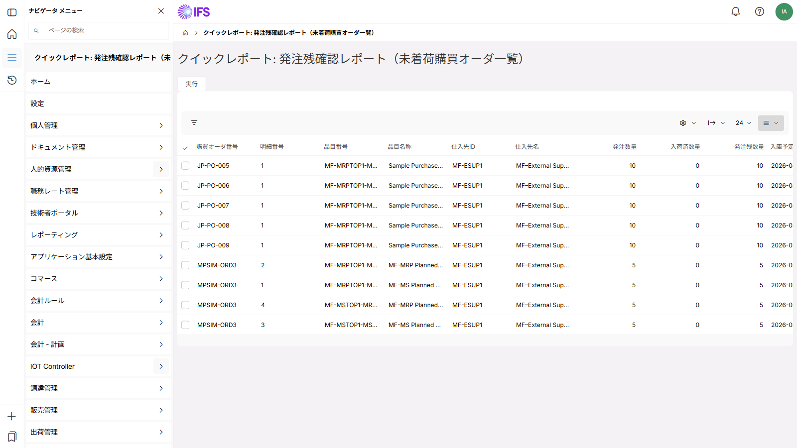

IFS AI 基盤による自律実行
ドメイン知識
IFS データモデルを熟知したAIが設計〜実装を自律実行
PURCHASE_ORDER / PURCHASE_ORDER_LINE / SUPPLIER_INFO の結合・カラム選定をAIが自動判断
制約カバー
クイックレポートの細かい制約もカバー
OUTER JOIN 非サポート・DATE 型フォーマット・OBJSTATE 文字列比較など実機固有の制約を自動回避
自動テスト
テスト〜改善〜結果出力をAIが一貫して実施
背景・設計書作成 → 構文検証 → IFS Cloud 実機登録 → テストシナリオ作成 → テストまで自律実行
このシナリオの背景
よくある課題
- 「発注残を一覧で確認したい」という要件がアドオン開発扱いになっている
- 開発コスト・納期・保守コストがかかり、後回しになりがち
- 担当者が毎朝 Excel でデータを手集計している
クイックレポートで解決
- IFS Cloud 標準機能のみで同等の一覧を実現
- 開発不要・設定のみで即日稼働
- Excel 手集計を廃止。データは常に最新
要件定義（INPUT）
| 項目 | 内容 |
|---|---|
| 対象ユーザー | 調達担当者・調達マネージャー |
| 目的 | 未着荷の発注残を一覧で把握し、納期遅延リスクを早期検知する |
| 対象データ | 購買発注ヘッダー／明細・仕入先・納期 |
| 抽出条件 | ステータス＝発注済み かつ 予定納期 ≤ 今日＋7日 |
| 表示項目 | 発注番号・品目・仕入先・発注数・入荷済数・残数・予定納期 |
| ソート | 予定納期 昇順 |
| 出力形式 | 画面表示 ＋ Excel エクスポート |
テスト結果
| No. | テスト観点 | 期待結果 | 結果 |
|---|---|---|---|
| 1 | ステータス「発注済み」のみ表示される | 入荷済・キャンセル済は除外 | ✓ OK |
| 2 | 予定納期フィルタが正しく動作する | 今日＋8日以降は表示されない | ✓ OK |
| 3 | 残数 = 発注数 − 入荷済数 が正確 | マイナスは 0 として扱う | ✓ OK |
| 4 | 予定納期 昇順でソートされる | 最も早い納期が先頭 | ✓ OK |
| 5 | Excel エクスポートが正常動作する | ヘッダー・データ行が一致 | ✓ OK |
| 6 | 権限外データは表示されない | 自社担当分のみ表示 | ✓ OK |
| 7 | 該当データなし時の表示 | 「データがありません」を表示 | ✓ OK |
実画面イメージ
IFS Cloud クイックレポート実行画面（9件 / 入庫予定日昇順）

IFS Cloud 25R2 実機（pwojaqu-dev1）での動作確認エビデンス。
成果物ドキュメント
期待効果
- 毎朝の手集計 Excel 作業を廃止（約30分/日の削減）
- 納期遅延の早期把握により、代替手配を前倒しで検討可能
- アドオン開発費ゼロ・保守コストゼロで同等の業務機能を実現
- 担当者が直接条件を変更できるため、IT部門依頼コストを削減